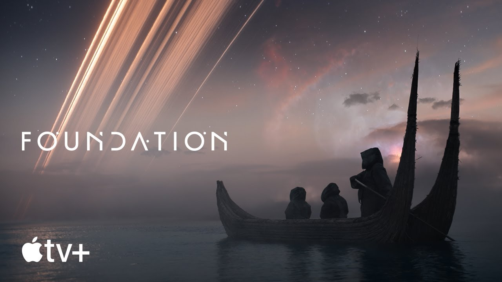

Last week Apple revealed that Foundation, the upcoming sc-fi show based on a series of books by Isaac Asimov, would debut on Apple TV Plus in September. Now we have something even better: a proper trailer.
It’s the first good look at the show since the debut teaser last year, and it reveals what looks to be an ambitious series that could give Apple’s streaming service its own must-watch epic along the lines of Game of Thrones or The Witcher. The trailer shows lavish sets, big-name stars, and, of course, a baby floating in a tank.
The show, which was first announced in 2018, is being helmed by showrunner David S. Goyer, and stars Lee Pace and Jared Harris. According to Apple, the story “chronicles a band of exiles on their monumental journey to save humanity and rebuild civilization amid the fall of the Galactic Empire.” Here’s Goyer on the adaptation:
In the decades since the Foundation series first saw print, Asimov’s prophetic science-fiction work has never been more relevant than it is now. Growing up, I devoured Foundation and dreamed of one day seeing it on screen — but a feature film didn’t seem big enough to embrace the ambition. Thanks to the broader landscape of streaming and a valuable partnership with Apple and Skydance, we are able to bring the series to the screen in a way that truly does it justice. Foundation has always been at the top of my bucket list and I’m honored I get to play a part in finally bringing it to life. Whether you’re a fan of the novels or simply someone craving a mind-blowing epic, I’m excited to share with you what we’ve created.
Foundation will debut on September 24th, with the first three (of 10) episodes available initially. Subsequent episodes will debut every Friday after that. It will follow another high-profile release, with Ted Lasso’s second season premiering in July.
Read from source